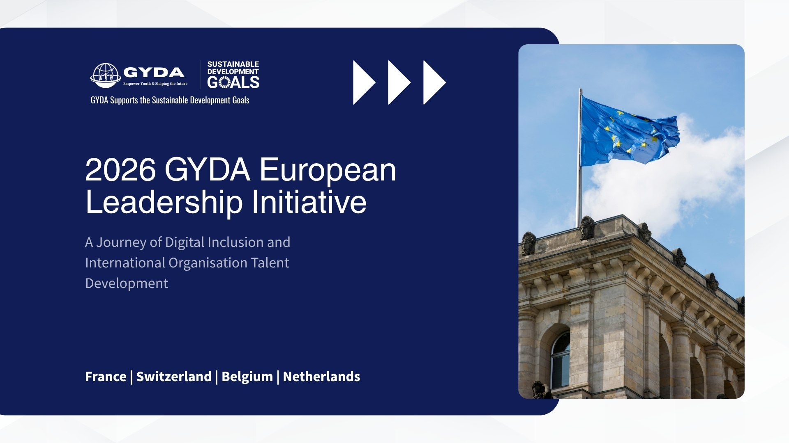
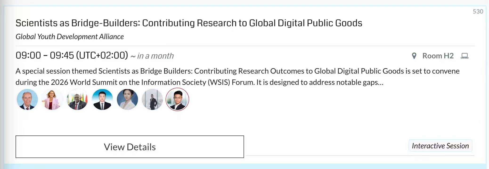

2026 GYDA European Leadership Initiative: A Journey of Digital Inclusion and International Organisation Talent Development

Location
France, Switzerland
Date
August 8 – September 3, 2026
This August 2026, we are proud to launch two flagship immersive journeys: the intensive 4-day Paris Digital Inclusion & Youth Development Programme and the 10-day Geneva · Paris 'Global Nexus' Programme. Operating from our Paris headquarters, we have leveraged our extensive multilateral network to design a structured pathway that brings youth directly into the heart of Europe's diplomacy and tech governance. Through pre-arranged official access and curated expert briefings, participants will engage directly with top-tier UN agencies and key international organizations, transforming from observers of global affairs into active participants.
Empowered by Global Partnerships: Our Collaboration with the ITU
As a recognized stakeholder in the United Nations World Summit on the Information Society (WSIS) multistakeholder process, we are exceptionally proud to serve as an official partner organisation of the International Telecommunication Union (ITU). This strategic standing within the UN system allows us to offer our participants unparalleled access to the forefront of global digital policy and AI governance.

Guided by this partnership and our ongoing foundational initiatives—Dream Maker, Future Decoder, and Signal Catcher—we are committed to breaking down barriers for youth, particularly those from developing countries. When you join our European programmes, you are backed by our institutional credibility. You will leverage our official international coordination to step into high-level dialogues, ensuring your voice is heard in the multilateral frameworks that are shaping our sustainable and digital future.
Programme I: Paris Digital Inclusion & Youth Development Programme
Date: 31 August – 3 September 2026
Location: Paris, France
Duration: 4 days
An intensive 4-day programme focused on digital inclusion, youth leadership, AI ethics, and sustainable development.
- Day 1 — Youth Summit on Digital Inclusion: opening ceremony, SDG-aligned digital governance panel, keynote on responsible innovation, networking.
- Day 2 — AI Ethics & Transformation: workshop on AI ethics, digital transformation keynote, policy simulation, expert roundtables.
- Day 3 — GYDA Capacity-Building Workshops: digital literacy, project management, UN SDG alignment, multilateral engagement skills.
- Day 4 — Ecosystem Visits & Closing: Station F, OECD headquarters briefing, UNESCO World Heritage cultural exchange, project presentations and certificate ceremony.
Programme II: Geneva · Paris — "Global Nexus" Programme (Youth Capacity Building on International Organizations)
Date: 8 – 17 August 2026
Locations: Switzerland, France
Duration: 10 days
The programme aims to build the capacity of young scholars from developing countries to engage with international organizations through guided visits, expert briefings, and academic exchanges.
- Geneva: Guided visits to the United Nations Office at Geneva (UNOG/Palais des Nations), the World Trade Organization (WTO), and the International Labour Organization (ILO); tour of WHO/WIPO/ICRC external areas; and exchanges with diplomats.
- Paris: Features cross-cultural communication workshops and group research presentations. To ensure academic continuity, the core itinerary is guided by a Three-Dimensional Academic Framework:
- Aug 12: Arrival; UNESCO Headquarters visit.
- Aug 13 (Int'l Economic Governance): OECD - Sustainable Development seminar.
- Aug 14 (European Political Studies): Sciences Po Paris - European Governance.
- Aug 15 (Academic & Cultural Int'l): Sorbonne + Louvre Museum.
- Aug 16: Group research presentations & closing ceremony.
- Aug 17: Checkout; CDG transfer; departure.
About Us
Global Youth Development Alliance (GYDA) is a non-profit association legally registered in Paris, France (Law of 1 July 1901; Registration No. W751278089). We are dedicated to digital inclusion, youth empowerment, sustainable development, and international cooperation.
As a recognised stakeholder in the United Nations World Summit on the Information Society (WSIS) multistakeholder process, GYDA serves as an official partner organisation of the International Telecommunication Union (ITU).
GYDA's flagship programmes — Dream Maker, Future Decoder, and Signal Catcher — create structured pathways for young people in developing countries to engage with international institutions and global governance frameworks.